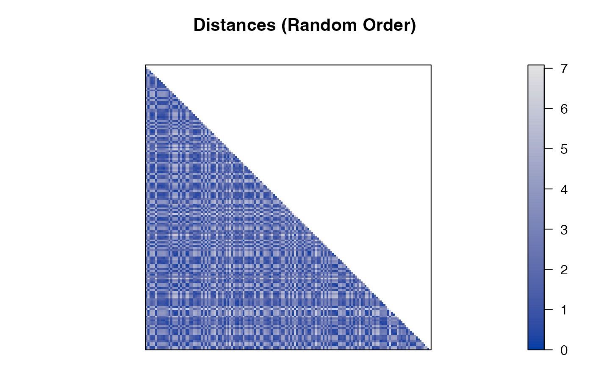
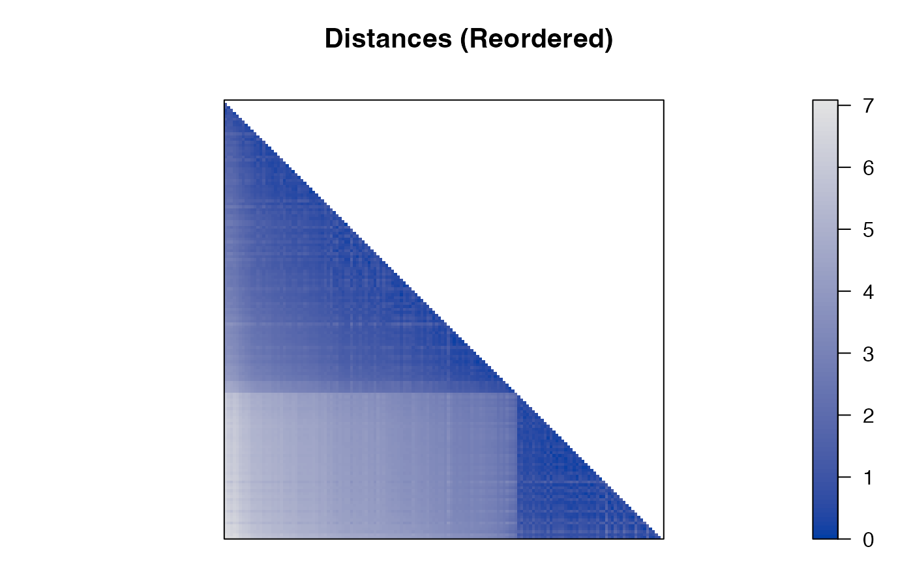
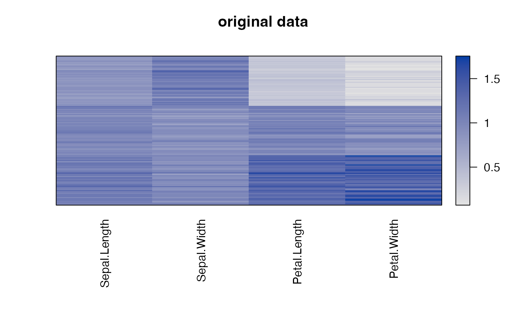
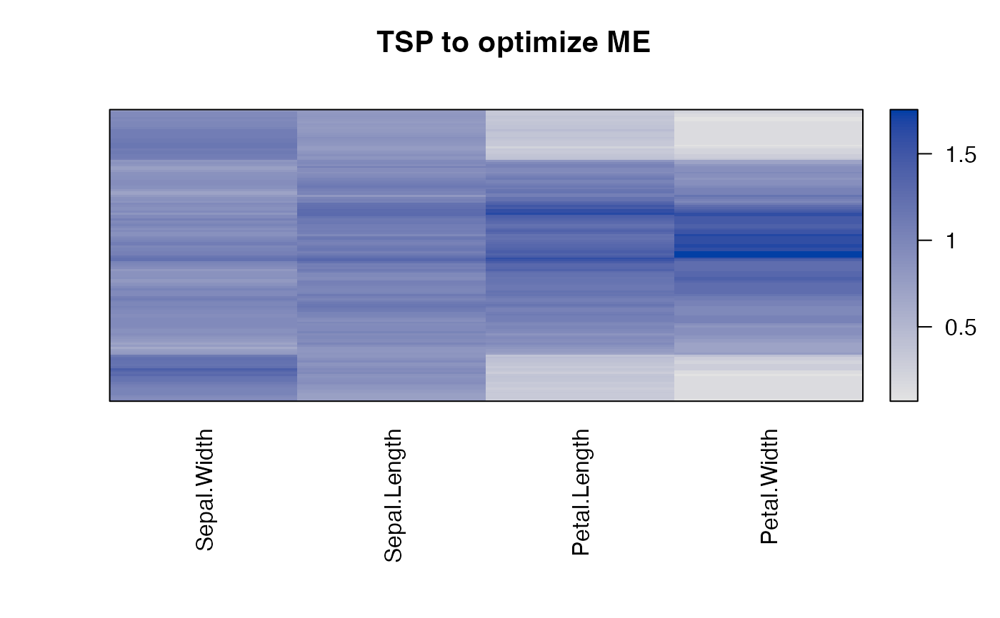
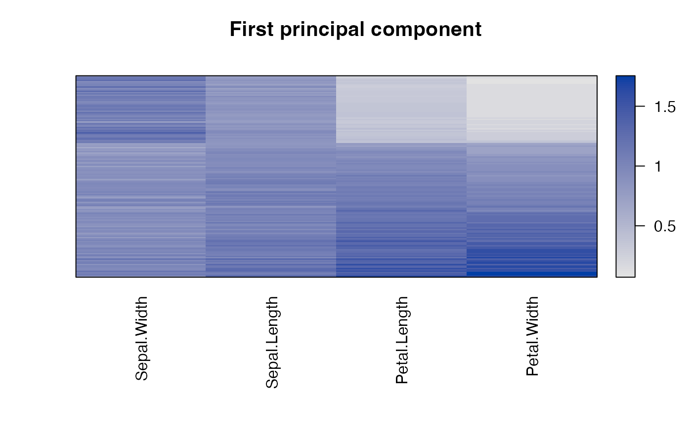
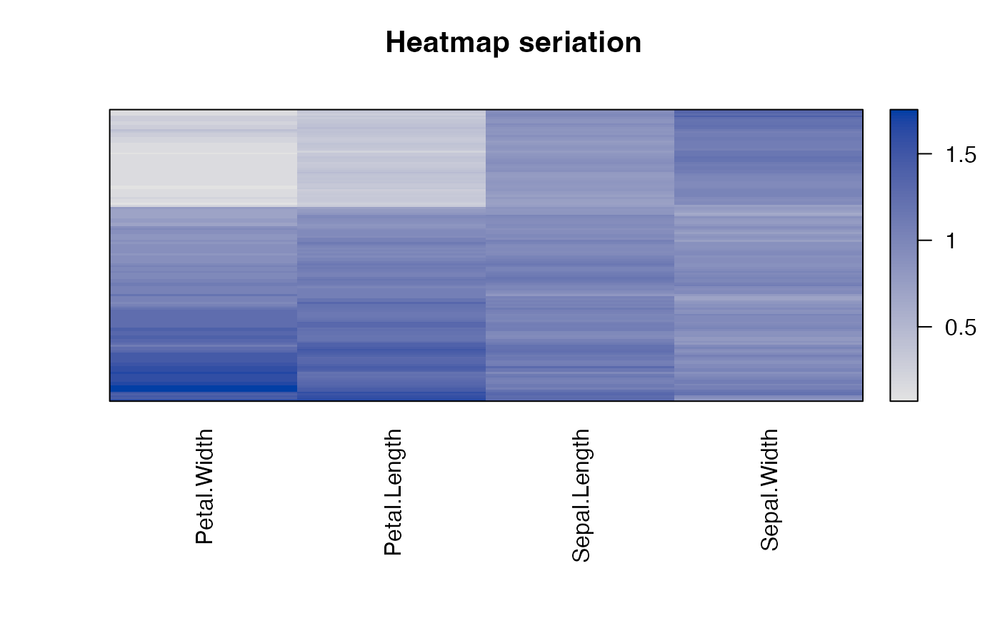
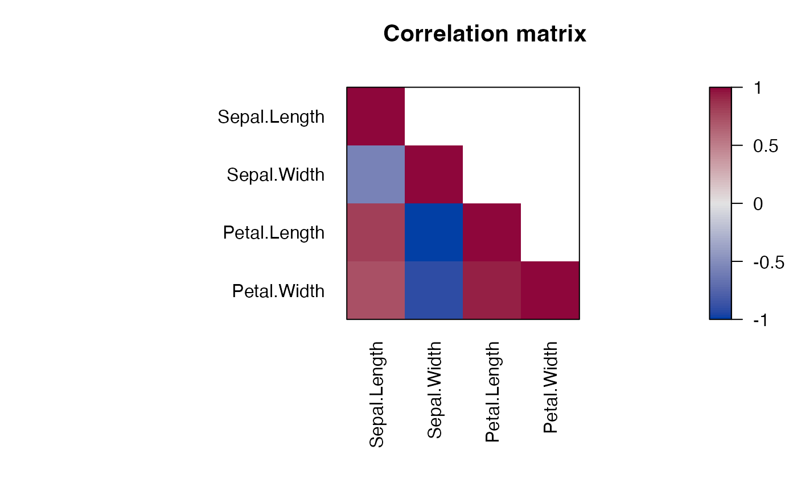
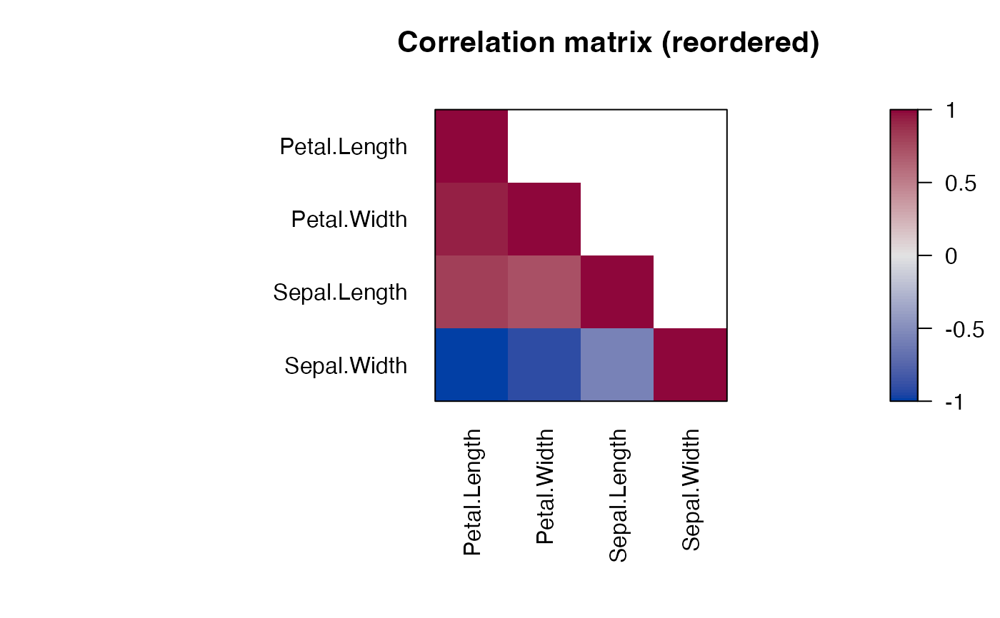

Seriate Dissimilarity Matrices, Matrices or Arrays
Source:R/seriate.R, R/seriate.array.R, R/seriate.data.frame.R, and 3 more
seriate.RdTries to find an linear order for objects using data in form of a
dissimilarity matrix (two-way one mode data), a data matrix (two-way
two-mode data) or a data array (k-way k-mode data). The order can then be
used to reorder the dissimilarity matrix/data matrix using
permute().
Usage
seriate(x, ...)
# S3 method for array
seriate(x, method = "PCA", control = NULL, margin = seq(length(dim(x))), ...)
# S3 method for data.frame
seriate(x, method = "Heatmap", control = NULL, margin = c(1, 2), ...)
# S3 method for dist
seriate(x, method = "Spectral", control = NULL, ...)
# S3 method for matrix
seriate(x, method = "PCA", control = NULL, margin = c(1, 2), ...)
# S3 method for table
seriate(x, method = "CA", control = NULL, margin = c(1, 2), ...)Arguments
- x
the data.
- ...
further arguments are added to the
controllist.- method
a character string with the name of the seriation method (default: varies by data type).
- control
a list of control options passed on to the seriation algorithm.
- margin
a vector giving the margin indices (dimensions) to be seriated. For example, for a matrix,
1indicates rows,2indicates columns,c(1,2)indicates rows and columns. Unseriated margins return a identity seriation order.
Value
Returns an object of class ser_permutation.
Details
Seriation methods are managed via a registry. See
list_seriation_methods() for help. In the following, we discuss only the
built-in methods that are registered automatically by the package seriation.
Many seriation methods (heuristically) optimize (minimize or maximize) an
objective function. The value of the function for a given seriation can be
calculated using criterion(). In this manual page, we
include the measure which is optimized by each method using bold font.
If no measure is mentioned, then the measure does not directly optimize a measure.
A definition of the measures can be found in the criterion() manual page.
Seriation methods for distance matrices (dist)
One-mode two-way data has to be provided as a dist object (not as a symmetric matrix). Similarities have to be transformed into dissimilarities. Currently, the following methods are implemented (for a more detailed description and an experimental comparison see Hahsler (2017):
"ARSA" Anti-Robinson seriation by simulated annealing to minimize the linear seriation criterion (simulated annealing initialization used in Brusco et al 2008).
"BBURCG" Anti-Robinson seriation by branch-and-bound to minimize the unweighted gradient measure (Brusco and Stahl 2005). This is only feasible for a relatively small number of objects.
"BBWRCG" Anti-Robinson seriation by branch-and-bound to minimize the weighted gradient measure (Brusco and Stahl 2005). This is only feasible for a relatively small number of objects.
"TSP" Traveling salesperson problem solver to minimize the Hamiltonian path length. The solvers in TSP are used (see
TSP::solve_TSP()). The solver method can be passed on via thecontrolargument, e.g.control = list(method = "two_opt"). Default is the est of 10 runs of arbitrary insertion heuristic with 2-opt improvement.Since a tour returned by a TSP solver is a connected circle and we are looking for a path representing a linear order, we need to find the best cutting point. Climer and Zhang (2006) suggest to add a dummy city with equal distance to each other city before generating the tour. The place of this dummy city in an optimal tour with minimal length is the best cutting point (it lies between the most distant cities).
"R2E" Rank-two ellipse seriation (Chen 2002).
This method starts with generating a sequence of correlation matrices \(R^1, R^2, \ldots\). \(R^1\) is the correlation matrix of the original distance matrix \(D\) (supplied to the function as
x), and $$R^{n+1} = \phi R^n,$$ where \(\phi\) calculates the correlation matrix.The rank of the matrix \(R^n\) falls with increasing \(n\). The first \(R^n\) in the sequence which has a rank of 2 is found. Projecting all points in this matrix on the first two eigenvectors, all points fall on an ellipse. The order of the points on this ellipse is the resulting order.
The ellipse can be cut at the two interception points (top or bottom) of the vertical axis with the ellipse. In this implementation the top most cutting point is used.
"MDS", "MDS_metric", "MDS_nonmetric", "MDS_angle" Multidimensional scaling (MDS).
Use multidimensional scaling techniques to find an linear order by minimizing stress. Note MDS algorithms used for a single dimension tend to end up in local optima and unidimensional scaling (see Maier and De Leeuw, 2015) would be more appropriate. However, generally, ordering along the first component of MDS provides good results.
controlparameters:method: One of"cmdscale","isoMDS"or"sammon"."cmdscale"performs metric MDS usingstats::cmdscale(). Non-metric MDS methods"isoMDS"and"sammon"are preformed usingMASS::isoMDS().
By default, metric MDS is used (
stats::cmdscale()). In case of of general dissimilarities, non-metric MDS can be used. The method can be specified as the elementmethod("cmdscale","isoMDS"or"sammon") incontrol.For convenience, seriation methods
"MDS_metric"performscmdscale()and"MDS_nonmetric"performsMASS::isoMDS()."MDS_angle"projects the data on the first two components found by MDS and then orders by the angle in this space. The order is split by the larges gap between adjacent angles. A similar method was used for ordering correlation matrices by Friendly (2002)."HC", "HC_single", "HC_complete", "HC_average", "HC_ward" Hierarchical clustering.
Using the order of the leaf nodes in a dendrogram obtained by hierarchical clustering can be used as a very simple seriation technique. This method applies hierarchical clustering (
hclust()) tox. The clustering method can be given using a"method"element in thecontrollist. If omitted, the default"average"is used.For convenience the other methods are provided as shortcuts.
"GW" Hierarchical clustering (Gruvaeus and Wainer, 1972).
The methods start with a dendrogram created by
hclust(). As the"method"element in thecontrollist a clustering method (default"average") can be specified. Alternatively, an hclust object can be supplied using an element named"hclust".A dendrogram (binary tree) has \(2^{n-1}\) internal nodes (subtrees) and the same number of leaf orderings. That is, at each internal node the left and right subtree (or leaves) can be swapped, or, in terms of a dendrogram, be flipped. The leaf-node reordering to minimize Hamiltonian path length (restricted).
Method
"GW"uses an algorithm developed by Gruvaeus and Wainer (1972) as implementedgclus::reorder.hclust()(Hurley 2004). The clusters are ordered at each level so that the objects at the edge of each cluster are adjacent to that object outside the cluster to which it is nearest. The method produces an unique order.For convenience
"GW_single","GW_average","GW_complete", and"GW_ward"are provided."OLO" Optimal leaf ordering (Bar-Joseph et al., 2001).
Also starts with a dendrogram and produces an optimal leaf ordering with respect to the minimizing the sum of the distances along the (Hamiltonian) path connecting the leaves in the given order. The time complexity of the algorithm is \(O(n^3)\). Note that non-finite distance values are not allowed.
For convenience
"OLO_single","OLO_average","OLO_complete", and"OLO_ward"are provided."VAT" Visual Assessment of (Clustering) Tendency (Bezdek and Hathaway (2002)).
Creates an order based on Prim's algorithm for finding a minimum spanning tree (MST) in a weighted connected graph representing the distance matrix. The order is given by the order in which the nodes (objects) are added to the MST.
"SA" Simulated Annealing for diverse criterion measures.
Implement simulated annealing similar to the ARSA method, however, it works for any criterion measure defined in seriation. By default the algorithm optimizes for raw gradient measure and is warm started with the result of spectral seriation (2-Sum problem) since Hahsler (2017) shows that 2-Sum solutions are similar to solutions for the gradient measure.
Several popular local neighborhood functions are provided an new can be defined (see LS).
Note that this is an R implementation repeatedly calling criterion, and therefore is relatively slow.
"Spectral", "Spectral_norm" Spectral seriation (Ding and He 2004).
Spectral seriation uses a relaxation to minimize the 2-Sum Problem (Barnard, Pothen, and Simon, 1993). It uses the order of the Fiedler vector of the similarity matrix's (normalized) Laplacian.
Spectral seriation gives a good trade-off between seriation quality, speed and scalability (see Hahsler, 2017).
"SPIN_STS", "SPIN_NH" Sorting Points Into Neighborhoods (SPIN) (Tsafrir 2005).
Given a weight matrix \(W\), the algorithms try to minimize the energy for a permutation (matrix \(P\)) given by $$F(P) = tr(PDP^TW),$$ where \(tr\) denotes the matrix trace.
"SPIN_STS"implements the Side-to-Side algorithm which tries to push out large distance values. The default weight matrix suggested in the paper with \(W=XX^T\) and \(X_i=i-(n+1)/2\) is used. We run the algorithm fromstep(25) iteration and restart the algorithmnstart(10) with random initial permutations (default values in parentheses). Viacontrolthe parametersstep,nstart,Xandverbose."SPIN_NH"implements the neighborhood algorithm (concentrate low distance values around the diagonal) with a Gaussian weight matrix \(W_{ij} = exp(-(i-j)^2/n\sigma)\), where \(n\) is the size of the dissimilarity matrix and \(\sigma\) is the variance around the diagonal that control the influence of global (large \(\sigma\)) or local (small \(\sigma\)) structure.We use the heuristic suggested in the paper for the linear assignment problem. We do not terminate as indicated in the algorithm, but run all the iterations since the heuristic does not guarantee that the energy is strictly decreasing. We also implement the heuristic "annealing" scheme where \(\sigma\) is successively reduced. The parameters in
controlaresigmawhich can be a single value or a decreasing sequence (default: 20 to 1 in 10 steps) andstepwhich defines how many update steps are performed before for each value ofalpha. ViaW_functiona custom function to create \(W\) with the function signaturefunction(n, sigma, verbose)can be specified. The parameterverbosecan be used to display progress information."QAP_LS", "QAP_2SUM", "QAP_BAR", "QAP_Inertia" Quadratic assignment problem formulations for seriation using a simulated annealing solver.
These methods minimize the Linear Seriation Problem (LS) formulation (Hubert and Schultz 1976), the 2-Sum Problem formulation (Barnard, Pothen, and Simon 1993), the banded anti-Robinson form (BAR) or the inertia criterion.
controlparameters are passed on toqap::qap(). An important parameter isrepto return the best result out of the given number of repetitions with random restarts. Default is 1, but bigger numbers result in better and more stable results."GA" Use a genetic algorithm to optimize for various criteria.
The GA code has to be first registered. A detailed description can be found in the manual page for
register_GA()."DendSer" Use heuristic dendrogram seriation to optimize for various criteria.
The DendSer code has to be first registered. A detailed description can be found in the manual page for
register_DendSer()."Identity" Produces an identity permutation.
"Random" Produces a random permutation.
Seriation methods for matrices (matrix or data.frame)
Two-mode two-way data are general matrices. Some methods also require that the matrix is positive. Data frames are just a different representation of a matrix and all seriation methods for matrix can be also used for data frames. The default method for data frames is heatmap seriation which calculates distances between rows and between columns and then applies seriation on these using hierarchical clustering and optimal leaf ordering (OLO).
Currently the following methods are implemented for matrix:
"BEA" Bond Energy Algorithm (BEA; McCormick 1972).
The algorithm tries to maximize the Measure of Effectiveness. of a non-negative matrix. Due to the definition of this measure, the tasks of ordering rows and columns is separable and can be solved independently.
A row is arbitrarily placed; then rows are positioned one by one. When this is completed, the columns are treated similarly. The overall procedure amounts to two approximate traveling salesperson problems (TSP), one on the rows and one on the columns. The so-called `best insertion strategy' is used: rows (or columns) are inserted into the current permuted list of rows (or columns). Several consecutive runs of the algorithm might improve the energy.
Note that Arabie and Hubert (1990) question its use with non-binary data if the objective is to find a seriation or one-dimensional orderings of rows and columns.
The BEA code used in this package was implemented by Fionn Murtagh.
controlparameter:"rep": the number of runs can be specified. The results of the best run will be returned.
"BEA_TSP" Use a TSP to optimize the Measure of Effectiveness (Lenstra 1974).
controlparameter:"method": a TSP solver method (seeTSP::solve_TSP()).
"CA" Correspondence analysis for a table/matrix of frequencies.
This function is designed to help simplify a mosaic plot or other displays of a matrix of frequencies. It calculates a correspondence analysis of the matrix and an order for rows and columns according to the scores on a correspondence analysis dimension.
controlparameters:"dim": CA dimension used for reordering."ca_param": List with parameters for the call toca::ca().
"Heatmap" Heatmap seriation
Calculates distances between rows and between columns and then applies seriation on these using hierarchical clustering and optimal leaf ordering (method
"OLO"for distance matrices)."PCA" Order by the first principal component.
Uses the projection of the data on its first principal component to determine the order.
Note that for a distance matrix calculated from
xwith Euclidean distance, this methods minimizes the least square criterion."PCA_angle" Order using the first two principal components.
Projects the data on the first two principal components and then orders by the angle in this space. The order is split by the larges gap between adjacent angles. A similar method was used for ordering correlation matrices by Friendly (2002).
"Identity" Produces an identity permutation.
"Random" Produces a random permutation.
For general arrays no built-in methods are currently available.
References
Arabie, P. and L.J. Hubert (1990): The bond energy algorithm revisited, IEEE Transactions on Systems, Man, and Cybernetics, 20(1), 268--274. doi:10.1109/21.47829
Bar-Joseph, Z., E. D. Demaine, D. K. Gifford, and T. Jaakkola. (2001): Fast Optimal Leaf Ordering for Hierarchical Clustering. Bioinformatics, 17(1), 22--29. doi:10.1093/bioinformatics/17.suppl_1.S22
Barnard, S. T., A. Pothen, and H. D. Simon (1993): A Spectral Algorithm for Envelope Reduction of Sparse Matrices. In Proceedings of the 1993 ACM/IEEE Conference on Supercomputing, 493--502. Supercomputing '93. New York, NY, USA: ACM. https://ieeexplore.ieee.org/document/1263497
Bezdek, J.C. and Hathaway, R.J. (2002): VAT: a tool for visual assessment of (cluster) tendency. Proceedings of the 2002 International Joint Conference on Neural Networks (IJCNN '02), Volume: 3, 2225--2230. doi:10.1109/IJCNN.2002.1007487
Brusco, M., Koehn, H.F., and Stahl, S. (2008): Heuristic Implementation of Dynamic Programming for Matrix Permutation Problems in Combinatorial Data Analysis. Psychometrika, 73(3), 503--522. doi:10.1007/s11336-007-9049-5
Brusco, M., and Stahl, S. (2005): Branch-and-Bound Applications in Combinatorial Data Analysis. New York: Springer. doi:10.1007/0-387-28810-4
Chen, C. H. (2002): Generalized Association Plots: Information Visualization via Iteratively Generated Correlation Matrices. Statistica Sinica, 12(1), 7--29.
Ding, C. and Xiaofeng He (2004): Linearized cluster assignment via spectral ordering. Proceedings of the Twenty-first International Conference on Machine learning (ICML '04). doi:10.1145/1015330.1015407
Climer, S. and Xiongnu Zhang (2006): Rearrangement Clustering: Pitfalls, Remedies, and Applications, Journal of Machine Learning Research, 7(Jun), 919--943.
Friendly, M. (2002): Corrgrams: Exploratory Displays for Correlation Matrices. The American Statistician, 56(4), 316--324. doi:10.1198/000313002533
Gruvaeus, G. and Wainer, H. (1972): Two Additions to Hierarchical Cluster Analysis, British Journal of Mathematical and Statistical Psychology, 25, 200--206. doi:10.1111/j.2044-8317.1972.tb00491.x
Hahsler, M. (2017): An experimental comparison of seriation methods for one-mode two-way data. European Journal of Operational Research, 257, 133--143. doi:10.1016/j.ejor.2016.08.066
Hubert, Lawrence, and James Schultz (1976): Quadratic Assignment as a General Data Analysis Strategy. British Journal of Mathematical and Statistical Psychology 29(2). Blackwell Publishing Ltd. 190--241. doi:10.1111/j.2044-8317.1976.tb00714.x
Hurley, Catherine B. (2004): Clustering Visualizations of Multidimensional Data. Journal of Computational and Graphical Statistics, 13(4), 788--806. doi:10.1198/106186004X12425
Lenstra, J.K (1974): Clustering a Data Array and the Traveling-Salesman Problem, Operations Research, 22(2) 413--414. doi:10.1287/opre.22.2.413
Mair P., De Leeuw J. (2015). Unidimensional scaling. In Wiley StatsRef: Statistics Reference Online, Wiley, New York. doi:10.1002/9781118445112.stat06462.pub2
McCormick, W.T., P.J. Schweitzer and T.W. White (1972): Problem decomposition and data reorganization by a clustering technique, Operations Research, 20(5), 993--1009. doi:10.1287/opre.20.5.993
Tsafrir, D., Tsafrir, I., Ein-Dor, L., Zuk, O., Notterman, D.A. and Domany, E. (2005): Sorting points into neighborhoods (SPIN): data analysis and visualization by ordering distance matrices, Bioinformatics, 21(10) 2301--8. doi:10.1093/bioinformatics/bti329
See also
Other seriation:
register_DendSer(),
register_GA(),
register_optics(),
register_tsne(),
register_umap(),
registry_seriate
Examples
# Show available seriation methods (for dist and matrix)
list_seriation_methods()
#> $array
#> [1] "Identity" "Random" "Reverse"
#>
#> $dist
#> [1] "ARSA" "BBURCG" "BBWRCG" "GW"
#> [5] "GW_average" "GW_complete" "GW_single" "GW_ward"
#> [9] "HC" "HC_average" "HC_complete" "HC_single"
#> [13] "HC_ward" "Identity" "MDS" "MDS_angle"
#> [17] "MDS_metric" "MDS_nonmetric" "OLO" "OLO_average"
#> [21] "OLO_complete" "OLO_single" "OLO_ward" "QAP_2SUM"
#> [25] "QAP_BAR" "QAP_Inertia" "QAP_LS" "R2E"
#> [29] "Random" "SA" "SPIN_NH" "SPIN_STS"
#> [33] "Spectral" "Spectral_norm" "TSP" "VAT"
#>
#> $matrix
#> [1] "BEA" "BEA_TSP" "CA" "Heatmap" "Identity" "PCA"
#> [7] "PCA_angle" "Random" "Reverse"
#>
### Seriate as distance matrix (for the iris dataset)
data("iris")
x <- as.matrix(iris[-5])
x <- x[sample(1:nrow(x)), ]
d <- dist(x)
order <- seriate(d)
order
#> object of class ‘ser_permutation’, ‘list’
#> contains permutation vectors for 1-mode data
#>
#> vector length seriation method
#> 1 150 Spectral
pimage(d, main = "Distances (Random Order)")

pimage(d, order, main = "Distances (Reordered)")

# Compare seriation quality
rbind(
random = criterion(d),
reordered = criterion(d, order)
)
#> 2SUM AR_deviations AR_events BAR Cor_R Gradient_raw
#> random 30468963 966223.582 558784 165955.60 0.01263096 -15483
#> reordered 17821593 9887.392 54924 56609.97 0.37195391 992058
#> Gradient_weighted Inertia LS Lazy_path_length Least_squares
#> random -32636.37 211686682 5690074 29646.303 78893988
#> reordered 1771427.16 356910343 4487365 6705.889 76488569
#> ME Moore_stress Neumann_stress Path_length RGAR
#> random 5879.489 11833.839 5985.8554 389.49727 0.50678759
#> reordered 7253.697 1111.651 538.7757 91.28657 0.04981317
# Reorder the distance matrix
d_reordered <- permute(d, order)
pimage(d_reordered, main = "Distances (Reordered)")
### Seriate a matrix
data("iris")
x <- as.matrix(iris[-5])
# To make the variables comparable, we scale the data
x <- scale(x, center = FALSE)
# The iris flowers are ordered by species in the data set
pimage(x, main = "original data", prop = FALSE)

criterion(x)
#> Cor_R DiagSum ME Moore_stress Neumann_stress
#> 0.2137794 2.2822249 1005.9980469 357.1093200 133.6494969
# Apply some methods
order <- seriate(x, method = "BEA_TSP")
pimage(x, order, main = "TSP to optimize ME", prop = FALSE)

criterion(x, order)
#> Cor_R DiagSum ME Moore_stress Neumann_stress
#> -0.01660821 2.02965361 1026.81396484 167.28938180 59.12345189
order <- seriate(x, method = "PCA")
pimage(x, order, main = "First principal component", prop = FALSE)

criterion(x, order)
#> Cor_R DiagSum ME Moore_stress Neumann_stress
#> 0.2651909 2.1515976 1021.4874878 175.8500473 67.4722984
order <- seriate(x, method = "heatmap")
pimage(x, order, main = "Heatmap seriation", prop = FALSE)

criterion(x, order)
#> Cor_R DiagSum ME Moore_stress Neumann_stress
#> -0.2615153 2.8061108 1023.0682983 165.7717428 58.9144525
# reorder the matrix
x_reordered <- permute(x, order)
# create a heatmap seriation manually by calculating
# distances between rows and between columns
order <- c(
seriate(dist(x), method = "OLO"),
seriate(dist(t(x)), method = "OLO")
)
pimage(x, order, main = "Heatmap seriation", prop = FALSE)
criterion(x, order)
#> Cor_R DiagSum ME Moore_stress Neumann_stress
#> -0.2615153 2.8061108 1023.0682983 165.7717428 58.9144525
### Seriate a correlation matrix
corr <- cor(x)
pimage(corr, upper_tri = FALSE, main = "Correlation matrix")

# we need to define a distance (we used d = sqrt(2(1 - r))) and
# then reorder the matrix (rows and columns).
d <- as.dist(sqrt(2 * (1 - corr)))
o <- seriate(d)
corr_reordered <- permute(corr, order = c(o, o))
pimage(corr_reordered, upper_tri = FALSE, main = "Correlation matrix (reordered)")
